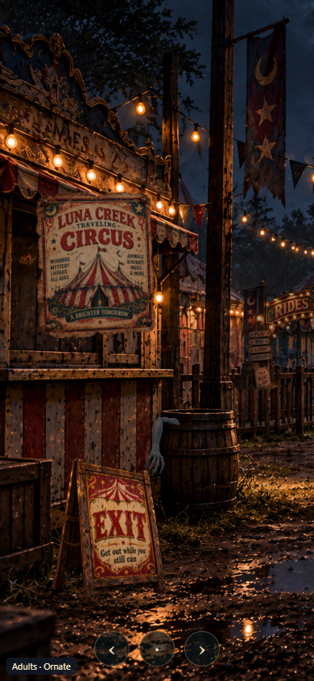
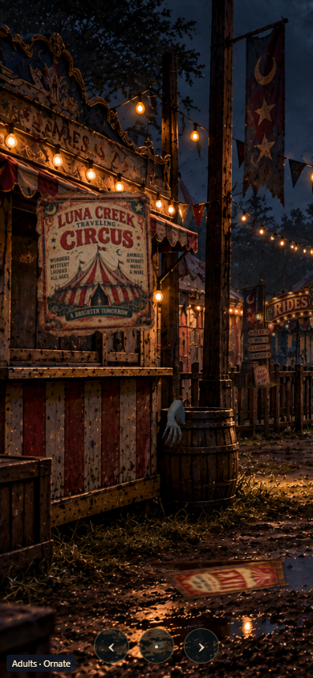

Branch: codex/dreamscapes-midway-arm. Approved visual version, prepared for merge. No manual deployment.
Open the normal Midway. Wait 15–20 seconds after the arm is ready. The event plays once per visit and lasts approximately 11.8 seconds. Reload or leave and return to replay.
The whole rig now uses uniform scale 84, another 30% reduction from 120. The elbow bend is directed toward the barrel opening. Searching uses a nonrepeating sequence of front-wall contacts, pauses and short pats, with independently articulated fingers. The concealed base shifts within the barrel during the short near-edge reach, and the elbow rises over the rim. The shove travels 9 scene units. Withdrawal returns over the opening. The original model and all 22 joints remain unchanged.
Latest checks: desktop/mobile interaction results and uniform scale and joint-length results. The eight age-band runs below describe the earlier rigged version. This revised staging was visually approved by the user on 2026-10-19.
The newly supplied 3D_Alien_Right_Arm_Rigged.glb supersedes the need to build another rig. The runtime copy is byte-identical to that supplied GLB: 13,774,016 bytes, 216,508 triangles, 119,029 exported vertices, 22 joints and four independently controlled digit chains. No finger is added or removed. Geometry, skin weights, UVs and embedded textures are preserved.
The original FBX, its four PNG maps and the supplied rigged GLB are backed up unchanged in apps/dreamscapes/checkpoint/source-assets/midway-arm, with SHA-256 records in sources.json. A textured left-arm reference conversion is saved separately in derived/original-left-textured.glb. The FBX maps use sRGB for color and linear data for normal, metallic and roughness.
Source audit: the supplied right-arm positions match X-reflected FBX positions after a uniform 0.85 export scale and Y offset. The 298 sampled nearest-position errors are below 0.000000151 model units. Skin weights are finite, no vertex has zero total weight, and maximum weight-sum error is 0.000000120. Approximately 99.997% of nondegenerate face windings agree with their vertex normals. The source maps themselves are dark gray, not pale ivory; the preview preserves those colors.
| Stage | Duration |
|---|---|
| Fingertips, hand, forearm emerge | 2.6 s |
| Uneven searching, separate curls, grip/release | 4.6 s |
| Reach to barrel-facing edge of EXIT | 1.8 s |
| Contact pause, shove, fall | 0.8 s |
| Return above rim, withdraw fingers last | 2.0 s |
One transparent, cropped WebGL canvas renders the actual skinned mesh. Depth-only barrel/rim occluders conceal submerged parts without painting over or modifying background artwork. The existing EXIT anchor receives the fall transform; it is not replaced. All arm rendering ignores pointer events. The native link remains available by pointer, touch and keyboard, including during motion and after falling.
The approved mobile entry framing keeps the same left barrel and EXIT together. Existing look controls remain. Leaving cancels the event; returning resets it. Reduced-motion mode skips the arm and fall. A failed arm load leaves the existing EXIT fully functional. No Carousel runtime or GLB is changed.
verify-3d.cjs checks Kids, Pre-Teens, Teens and Adults at 1536×1024 and 390×844: full real-time sequences, 48 actual EXIT activations, no repeat, leaving/reset, reduced motion and finite joint positions. Two runs include the actual random delay. Results: 3d-results.json. Source checks: source-audit.json.
Normal-distance images verify fingertips above the rim, searching, reach/contact, sign fall and withdrawal. The current size, staging and animation were approved in the local preview. The source rig and skin weights have not been reauthored.


From this worktree: node apps/dreamscapes/build.mjs, then python -m http.server 4204 --bind 127.0.0.1 --directory apps/dreamscapes/dist. An existing server on 4204 can be reused after building. Do not rebuild while a verification run is reading the dist files.
For local diagnostics only add ?arm=review and use MidwayArmReview.seek(seconds), begin(), reset(), state() or rig(). The previous 2D prototype is retained under drafts as a reference and is not active.